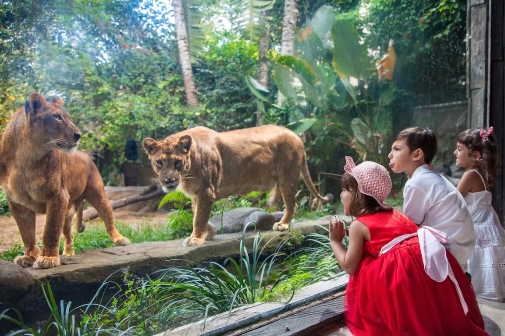

Bali ZOO
Destinasi Wisata Bali ZOO 
Kebun Binatang Bali, Konservasi Lingkungan, Area Alam dan Margasatwa, Kebun Binatang Bali, Area Wisata Alam dan Taman Marga Satwa. Bali Zoo merupakan kebun binatang yang dibuka pada tahun 2002 dan menjadi salah satu kebun binatang terbaik di Asia Pasifik. Kebun binatang ini tidak hanya menjadi tempat rekreasi keluarga saja, namun juga menjadi tempat untuk melestarikan berbagai satwa yang hampir punah.Berikut aturan yang harus di taati di destinasi wisata Bali ZOO